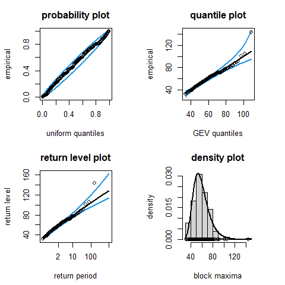

Extreme Value Analyses with Missing Data
Performs likelihood-based extreme value inferences with adjustment for the presence of missing values. A GEV distribution is fitted to block maxima using maximum likelihood estimation, with the GEV location and scale parameter reflecting the numbers of non-missing raw values in each block. A Bayesian version is also provided. For the purposes of comparison, there are options to make no adjustment for missing values or to discard any block maximum for which greater than a percentage of the underlying raw values are missing. A plot method provides a set of standard model diagnostic plots, with appropriate adjustment made for the presence of missing values. Example datasets containing missing values are provided.
The evmissing package was created to accompany Simpson and Northrop (2026), which will appear in Environmetrics in 2026.
An example
The main function in evmissing is gev_mle(), which fits a GEV distribution to block maxima using maximum likelihood estimation, with the option to make an adjustment for the numbers of non-missing raw values in each block.
Our adjustment is based on the strong assumption that missing values occur completely at random. We suppose that a block maximum \(M_n\) based on a full block of length \(n\) has a GEV(\(\mu\), \(\sigma\), \(\xi\)) distribution, with distribution function \(G(x)\). Let \(n_i\) be the number of non-missing values in block \(i\) and let \(M_{n_i}\) denote the block maximum of such a block. We suppose that \(M_{n_i}\) has a GEV(\(\mu(n_i)\), \(\sigma(n_i)\), \(\xi\)) distribution, where \(\mu(n_i) = \mu + \sigma [(n_i/n)^\xi -1] / \xi\) and \(\sigma(n_i) = \sigma (n_i/n)^\xi\). These expressions are based on the supposition that \(M_{n_i}\) has a distribution function of \(G(x)^{n_i/n}\), where \(n_i/n\) reflects the effective block size for block \(i\) relative to the full block size.
Sea surge height data
We illustrate this using the data BrestSurgeMaxima, which is a data frame containing annual maximum sea surge heights (in cm) at Brest, France for the years 1846-2007 inclusive.
library(evmissing)
head(BrestSurgeMaxima)
#> maxima notNA n block
#> 1846 59.987 361 365 1
#> 1847 58.873 344 365 2
#> 1848 59.749 366 366 3
#> 1849 49.547 365 365 4
#> 1850 55.512 365 365 5
#> 1851 69.422 365 365 6In addition to the annual maxima this data frame includes notNA, the number of days in each year for which raw data were available, and n, the number of days in the year, that is, the block length. The function block_maxima() can be used to create data of this format from a raw time series and information about how blocks are defined. Alternatively, we can provide a raw time series directly to gev_mle().
Model fitting
# Make the adjustment
fit_adjust <- gev_mle(BrestSurgeMaxima)
summary(fit_adjust)
#>
#> Call:
#> gev_mle(data = BrestSurgeMaxima)
#>
#> Estimate Std. Error
#> mu 52.89000 1.0650
#> sigma 11.84000 0.7361
#> xi -0.02375 0.0445
# Make no adjustment
fit_no_adjust <- gev_mle(BrestSurgeMaxima, adjust = FALSE)
summary(fit_no_adjust)
#>
#> Call:
#> gev_mle(data = BrestSurgeMaxima, adjust = FALSE)
#>
#> Estimate Std. Error
#> mu 52.27000 1.07300
#> sigma 12.09000 0.76170
#> xi -0.03005 0.04388The most obvious difference between these model fits is that the estimated location parameter with adjustment (52.27 cm) is smaller than that when the adjustment is used (52.89 cm). This is as expected because if some of the data that could contribute to an annual maximum are missing then the observed annual maximum is stochastically smaller than the unobserved maximum based on full data.
Alternatively, if the argument adjust to gev_mle() is a numeric scalar then any block maximum for which greater than adjust percent of the underlying raw values are missing is discarded before fitting a GEV distribution, with no further adjustment made.
Model diagnostic plots
The plot method for an object returned from gev_mle creates visual model diagnostics like those described in Coles (2001) and implemented in Heffernan and Stephenson (2018), where the values plotted have been adjusted, where necessary, for the presence of missing values.
plot(fit_adjust)
We see that overall the GEV model fits these data well, although the largest annual maximum sea surge height lies outside the profile-based 95% confidence interval that is relevant to this observation.